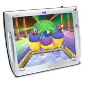
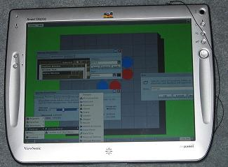

Mostly Obsolete
The "standard" way is to use a Smart Display Panel is as remote desktop client, connected to a host computer running Windows XP-Pro (or Windows Server + Terminal Services).
I will call this "MIRA" mode.
This alone makes Smart Displays enjoyable and cool.
 (photo from viewsonic.com)
This page is for owners of the ViewSonic V110 or V150 "Smart Display" Panel who want to use their panels in non-standard ways.

USE AT YOUR OWN RISK
Information on this page is provided AS-IS with no warranty.
Using these hacks may void your warranty on your hardware.
Installation of *any* custom software on the Panel
may be in violation of EULA that comes with the device,
and may void your warranty.
The use of this tool for illegal activities is prohibited.
Please respect copyrights of others.
Instructions similar to the Viewsonic Installation.
Different batch file name and folder.
Use this ZIP instead.
Includes a version of HomieGate client too.
The Future
HomieGate client works in progress (home X10 control, intercom, stereo control, conversational bot, etc). Now discontinued.